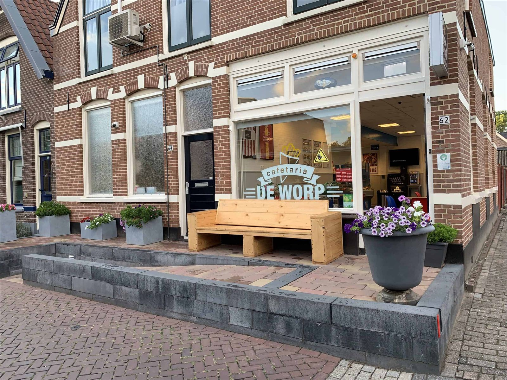
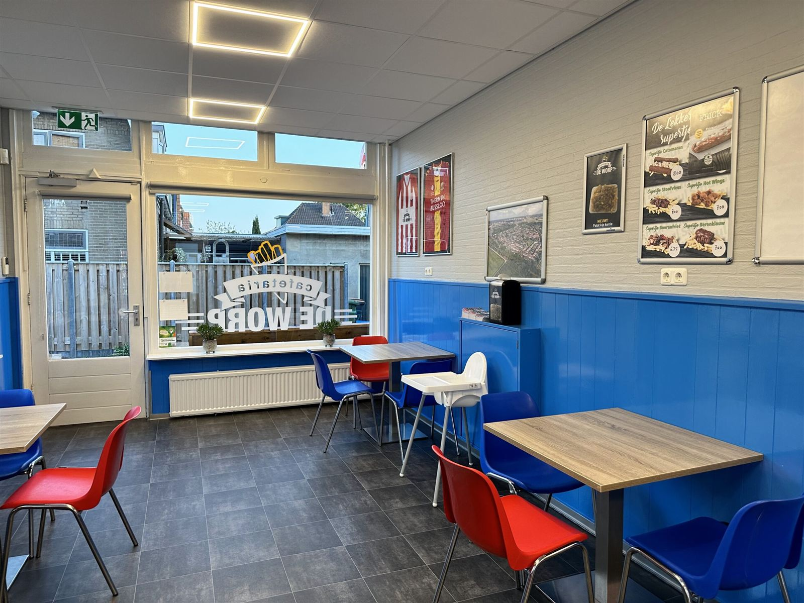
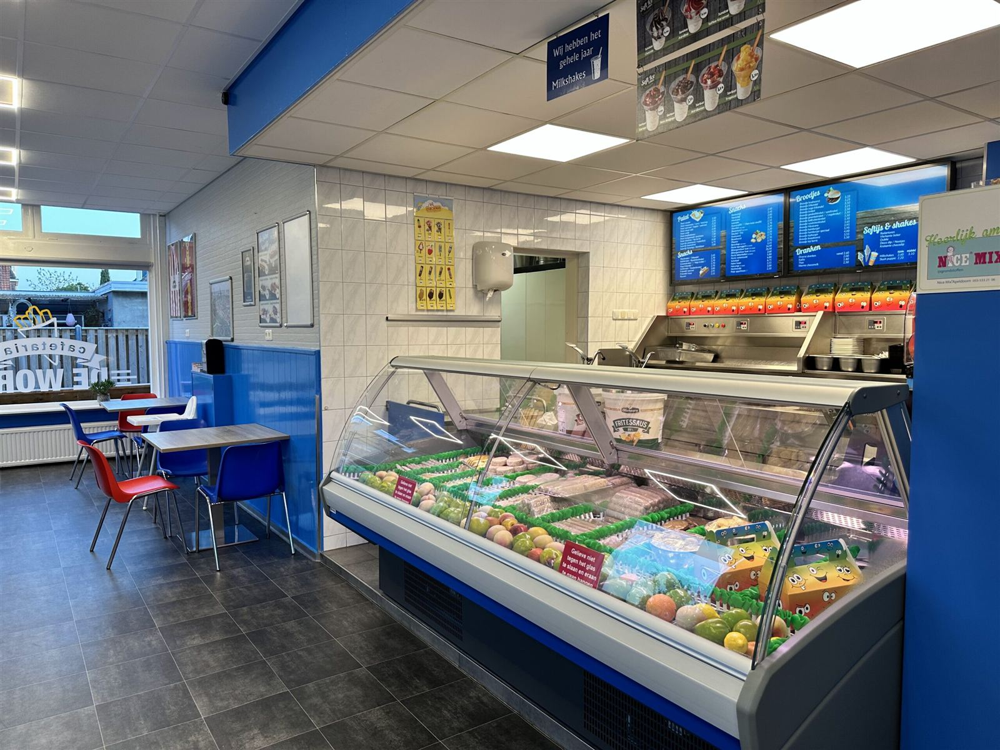

Uw cafetaria in de buurt
Cafetaria
De Worp
Patat, snacks, broodjes en softijs aan de Bloemstraat in Deventer. Even binnenlopen, bestellen aan de vitrine en meenemen of lekker hier opeten.
Woensdag t/m zondag open van 15:30 tot 20:30 uur
Bloemstraat 62 Deventer
Wo t/m zo 15:30 – 20:30 uur
Ma en di gesloten

Afhalen of aan tafel
- Binnenkomen
- De cafetaria is geschikt voor rolstoelgebruikers. En met een ijsje is het prima toeven op het bankje voor de deur.
- Bestellen
- Bestel aan de overzichtelijke vitrine. Uw bestelling wordt snel en vakkundig voor u bereid.
- Aan tafel
- Wacht op uw bestelling aan een van de tafeltjes, of eet het gewoon bij ons. Met een lekker drankje natuurlijk.
Bestellingen doorgeven kan helaas niet telefonisch of per mail: kom gerust langs, dan staat het zo voor u klaar.
Elke maand iets extra’s
We hebben elke maand enkele aanvullingen op ons assortiment. Voordelig geprijsd, eens een keer wat anders. Denk aan een lekkere Berenhap, een saté-menu of een Bacon Burger.
Benieuwd naar de actie van deze maand? Vraag ernaar aan de vitrine.


Onze producten zijn altijd vers
Onze producten worden gebakken in plantaardige olie, en die olie verversen we op tijd.
Alle snacks, van patat tot broodjes en van kroket tot frikandel, worden volgens de laatste richtlijnen gepresenteerd.

Openingstijden & contact
| Maandag | gesloten |
|---|---|
| Dinsdag | gesloten |
| Woensdag | 15:30 – 20:30 |
| Donderdag | 15:30 – 20:30 |
| Vrijdag | 15:30 – 20:30 |
| Zaterdag | 15:30 – 20:30 |
| Zondag | 15:30 – 20:30 |
Voor vragen kunt u ons altijd mailen of het formulier hieronder invullen. Bestellingen kunnen niet telefonisch of per mail worden doorgegeven.